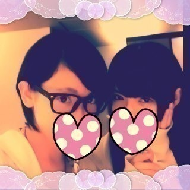

こんにちはヽ(・∀・)ﾉ
生駒里奈です！
今日はあしゅかさん(あしゅりん)と
劇場版銀魂完結編万事屋よ永遠なれを見てきました〜ヽ(・∀・)ﾉ
そうっ！
知ってる方もいると思います！
いこま銀魂二回目見に行きました！
一回目は川後のひなさんと行きました！
あんねめちゃくちゃ良くてね
あーもっかい行きたい！
と思っていたら
あしゅかさんがわたしも行きたい〜と言っていたので行きました！
あんね
これは何回見てもよいね。
前回の紅桜編はなんか用事があって結局行けなかったからな〜
銀さんかっこいい。
本当貴方ってかっこいい。
また泣いちゃった(；ω；)
感動！
あと興奮！
いけー！銀さんいけー！とか
ぱっつぁんがイケメンすぎて恋をして笑
頭に内容が入ってるのにまた新鮮な気持ちで見れました！
空知さんありがとうございます！
おそろいで銀魂のシャーペンも買いました！
三回目あるかもしれませんヽ(・∀・)ﾉ
でもトリコも見たいよね！
あとローン・レンジャーも！
ジョニー・デップかっこよすぎ！
パイレーツオブカリビアンをみて海賊になりたいと思った人は少なくないはず！
映画はよいね〜ヽ(・∀・)ﾉ
あと漫画では
ハイキュー！と銀の匙、鋼の錬金術師読み始めました！
単行本ねヽ(・∀・)ﾉ
頭の中が二次元でみたされています。
でもその時が一番生駒里奈が元気な時なんです。

ふたりともあまりにも顔がニヤニヤしていたのであしゅかさんから隠してと言われわたしも隠したかったからかくしました！
ニヤニヤしすぎてやばいから！
それぐらいよい！
大切な事なので何回も言います！
じゃ！
これからお仕事なので！
へばなっ！